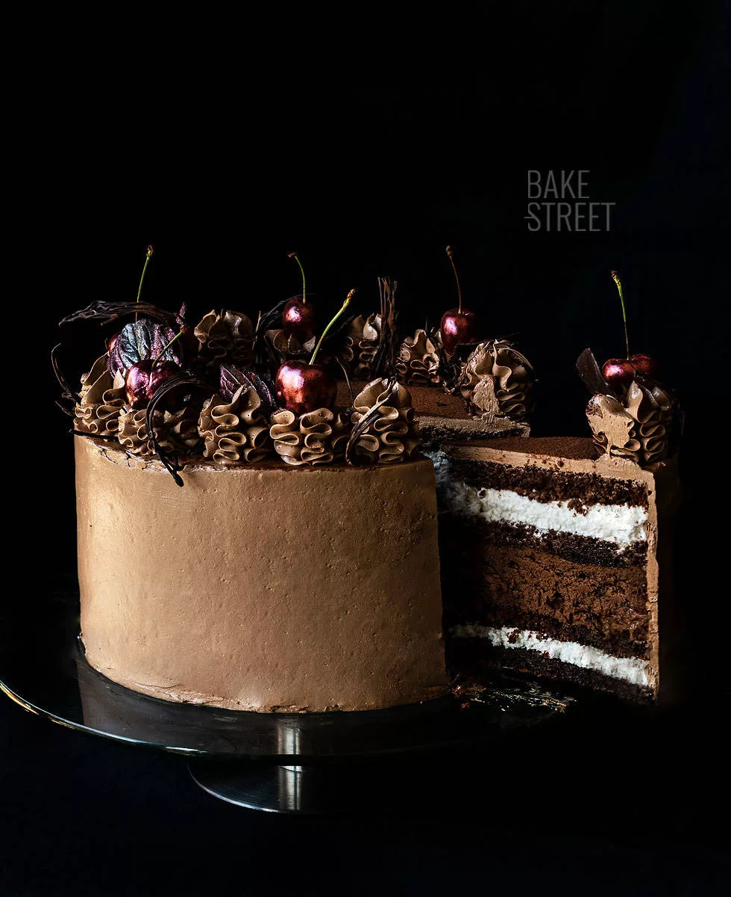

Catering
Ofrecemos servicios de catering especializados en coffee y brunch corporativos. Sabemos lo importante que es comenzar el día con energía y buen gusto, por lo que hemos diseñado una propuesta única para satisfacer las necesidades de tus eventos empresariales.
Nuestro servicio de coffee se compone de una selección premium de café recién hecho, acompañado de una variedad de tés y jugos. Además, ofrecemos una amplia gama de opciones para acompañar tu bebida favorita, como mini cuadraditos, medialunas, alfajorcitos, frutas frescas y yogures con granola.
Si estás buscando algo más sustancioso, nuestro servicio de brunch corporativo es la opción ideal. Contamos con un variado menú que incluye opciones saludables como ensaladas frescas, así como platos más contundentes y deliciosos sándwiches gourmet.
Nuestro equipo se encargará del montaje elegante y profesional del buffet o estación de café en tu lugar de trabajo u oficina. Además, nos aseguraremos de proporcionar un servicio amable y eficiente durante todo el evento.
No dudes en contactarnos para discutir tus necesidades específicas. Estamos comprometidos a brindarte un servicio personalizado que se adapte a tu presupuesto y expectativas.
